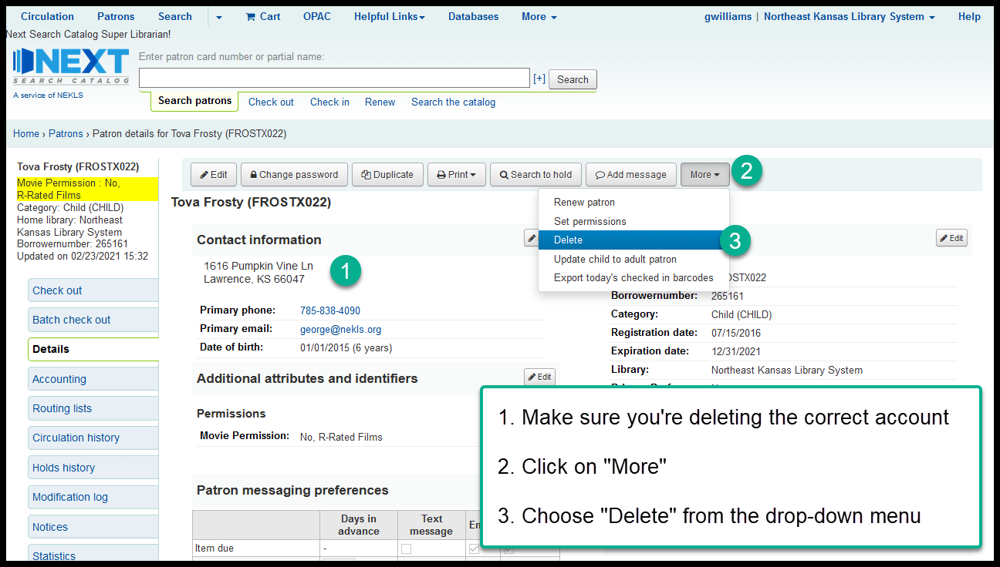
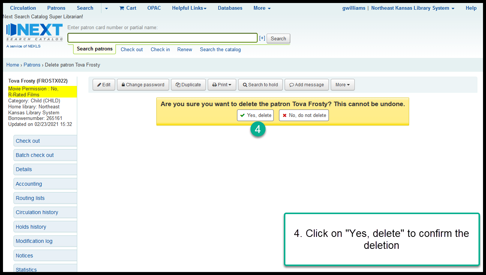

Best practices and options for dealing with borrower accounts for deceased borrowers¶
A question that comes up from time-to-time is, what to do when someone who has a library card dies. A lot of what happens depends on your library’s policies, the borrower’s family, whether or not the borrower has items checked out or items on request, whether or not the borrower acts as a guarantor for other borrowers, and whether or not the borrower owes the library money.
If your library has a policy on what to do when a borrower dies, follow those policies.
If your library does not have a specific policy or procedure, here are some suggestions on what to do in certain situations:
The borrower has no items checked out, no unfilled requests, is not a guarantor for another borrower, and owes no fees¶
- Option 1 - do nothing
If you do nothing and the borrower has a perfectly clear account, the borrower will be automatically deleted once the account has been expired for more than 3 years.
- Option 2 - manually delete the borrower
If you choose, you can delete the account manually by opening the account, then clicking on “More” and choosing “Delete” from the drop-down menu. If you choose to do this, please make sure that you are deleting the correct borrower.


The borrower has items checked out¶
- Option 1 - essentially do nothing
Some libraries do nothing and leave the items checked out to the deceased borrower’s account. This lets the overdue process follow its normal course. This means that the deceased borrower will receive the same overdue and lost notifications in the same manner as any living borrower. This gives the borrower’s family notice that the items need to be returned to the library. This practice also makes it easier if you want to bill the borrower’s estate if the items are never returned. This option can sometimes lead to bad feelings between the borrower’s family and the library - particularly if you are billing the estate for items that were not returned.
- Option 2 - writeoff the potentially lost items
Some libraries remove items from a deceased borrower’s account and mark them as “Missing” when they discover that a borrower has died. This way, if the items are returned, the missing status will automatically be removed from the borrower’s account if the items are returned but the borrower’s family will not be billed if the items are not returned. If you choose to do this, you should only do it for items your library owns. If follow this practice, it will be harder to bill the borrower’s estate if the items are never returned.